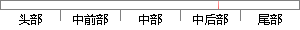

、傅里叶 变换法 傅里叶变换法
片段位置图

相似结果
相似片段：
。 １／２ 烄烄犇（ η ）烌 σ（Δ狌′）≈ 烆∑∑ （ ２ 犳狓） 烎 烅 （９） １／ ２ 烄犇（ η ）烌 σ（Δ狏′）≈ 烆∑∑ （ ２ 烆 犳狔 ） 烎 １．２傅里叶变换法 通过傅里叶变换法得出的物体表面位移或形变 的理论依据是散斑照相。本文是用Ｍａｔｌａｂ软件实现傅里叶变换的，采集变形前后的两幅散斑图，强度相加，做傅里
| 对比库： | 已发表资源库 |
| 来源： | . "In-plane displacement measurement of rigid body based on digital speckle photography", 10.3788, 2013. 查看来源 |
| 相似率 | 100% （严重抄袭） |